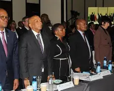

Lesotho goverment faces public critism over appountments and economic strains.

Civil society organisation Section Two has publicly warned that the government’s recent appointments to public service and diplomatic posts appear to bypass competitive recruitment and merit‑based processes. According to the group, several senior positions were not advertised and were instead filled by politically connected individuals, a practice they argue erodes public trust and violates constitutional principles guaranteeing equal access to public service. The organisation notes that youth unemployment estimated at about 39% of those aged 15 to 35 continues to strain families and communities across the country.
In response, government representatives say that all appointments fall within legal frameworks and are conducted by statutory bodies, but critics remain unconvinced. The issues of nepotism and recruitment transparency come amidst broader economic difficulties. Lesotho continues to grapple with high unemployment and poverty, with government efforts to stimulate job creation seen by some commentators as insufficient. Youth unemployment remains a major concern, with government strategies yet to yield significant progress.
Long‑standing challenges such as corruption, weak institutions, and limited transparency in governance continue to affect public confidence. Reports on the country’s political history highlight entrenched problems with patronage, misuse of funds and lack of accountability, which have hampered effective service delivery and economic development.
The current environment has sparked criticism from activists and community leaders who argue that more decisive political reforms are needed. In recent years, citizens have called for processes that are more transparent, fair and responsive to the needs of ordinary Basotho. Observers say the government’s ability to navigate these challenges balancing political cohesion with meaningful action on transparency, jobs, and reform will influence public trust and political stability in the months ahead.